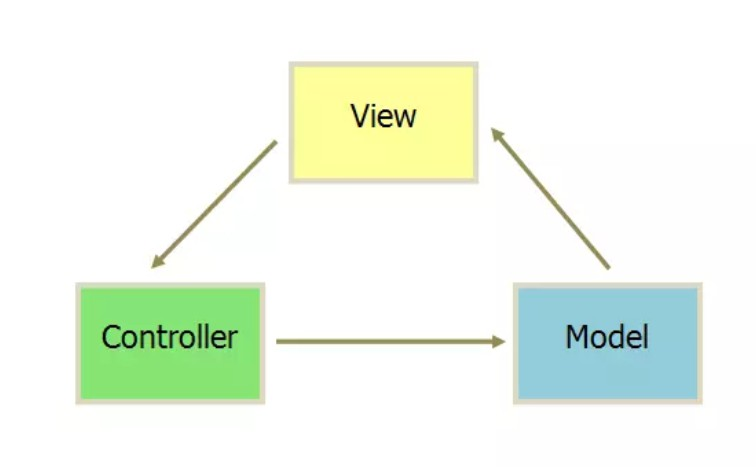
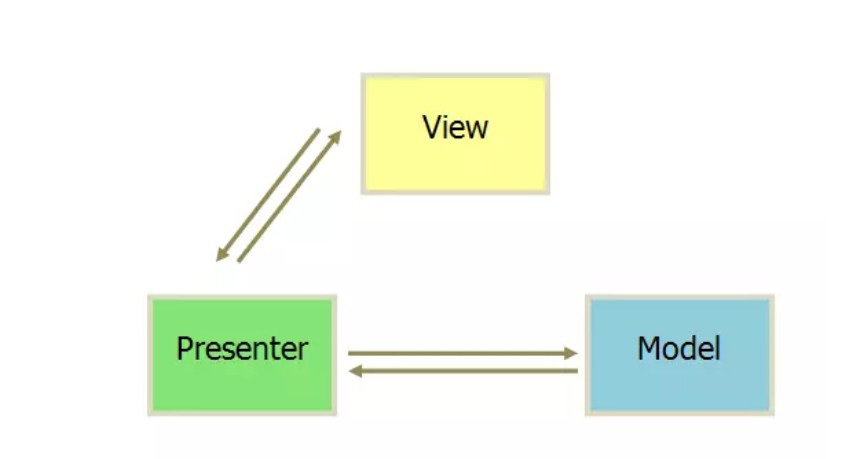
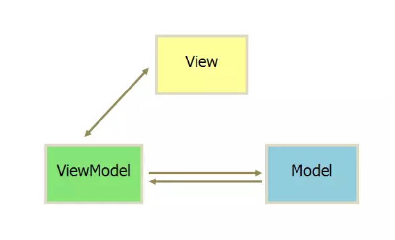

线程的基本用法？
继承的方式
比如说，定义一个线程只需要新建一个类继承自Thread，然后重写父类的run()方法，并在里面编写耗时逻辑即可，如下所示：
1
2
3
4
5
6class MyThread extends Thread {
public void run() {
// 处理具体的逻辑
}
}启动这个线程只需要new出MyThread的实例，然后调用它的start()方法，这样run()方法中的代码就会在子线程当中运行了，如下所示：
1
new MyThread().start();
使用继承的方式耦合性有点高
接口的方式
实现Runnable接口的方式来定义一个线程，如下所示：
1
2
3
4
5
6class MyThread implements Runnable {
public void run() {
// 处理具体的逻辑
}
}启动线程的方法，如下所示：
1
2MyThread myThread = new MyThread();
new Thread(myThread).start();Thread的构造函数接收一个Runnable参数，而我们new出的MyThread正是一个实现了Runnable接口的对象，所以可以直接将它传入到Thread的构造函数里。接着调用Thread的start()方法，run()方法中的代码就会在子线程当中运行了。
匿名类的方式
如果你不想专门再定义一个类去实现Runnable接口，也可以使用匿名类的方式，，如下所示：
1
2
3
4
5
6new Thread(new Runnable() {
public void run() {
// 处理具体的逻辑
}
}).start();
Handler 的原理（异步消息处理机制）？
Android 中主线程是不能进行耗时操作的，子线程是不能进行更新 UI 的。所以就有了Handler，它的作用就是实现线程之间的通信。
Handler 整个流程中，主要有四个对象，Handler，Message,MessageQueue,Looper。当应用创建的时候，就会在主线程中创建 Handler 对象，我们通过要传送的消息保存到 Message 中，handler 通过调用 sendMessage 方法将 Message发送到 MessageQueue 中，Looper 对象就会不断的调用 loop()方法。
不断的从 MessageQueue 中取出 Message 交给 Handler 进行处理。从而实现线程之间的通
信。

内存泄露原因及解决方式？
Handler 引起的内存泄漏。
解决：将 Handler 声明为静态内部类，就不会持有外部类 SecondActivity 的引用，其生命周
期就和外部类无关，如果 Handler 里面需要 context 的话，可以通过弱引用方式引用外部类。单例模式引起的内存泄漏。
解决：Context 是 ApplicationContext，由于 ApplicationContext 的生命周期是和 app 一致
的，不会导致内存泄漏非静态内部类创建静态实例引起的内存泄漏。
解决：把内部类修改为静态的就可以避免内存泄漏了
非静态匿名内部类引起的内存泄漏。
解决：将匿名内部类设置为静态的。
注册/反注册未成对使用引起的内存泄漏。
解决：注册广播接受器、EventBus 等，记得解绑。
资源对象没有关闭引起的内存泄漏。
解决：在这些资源不使用的时候，记得调用相应的类似 close()、destroy()、recycler()、
release()等方法释放。集合对象没有及时清理引起的内存泄漏。
解决：通常会把一些对象装入到集合中，当不使用的时候一定要记得及时清理集合，让相关对象不再被引用。
Fragment 与 与 Fragment 、Activity 通信的方式？
- 直接在一个 Fragment 中调用另外一个 Fragment 中的方法
- 使用接口回调
- 使用广播
- Fragment 直接调用 Activity 中的 public 方法
MVC 、MVP和 MVVM？
MVC

- View 传送指令到 Controller
- Controller 完成业务逻辑后，要求 Model 改变状态
- Model 将新的数据发送到 View，用户得到反馈，所有通信都是单向的。
MVP
MVP 模式将 Controller 改名为 Presenter，同时改变了通信方向。

各部分之间的通信，都是双向的。
View 与 Model 不发生联系，都通过 Presenter 传递。
View 非常薄，不部署任何业务逻辑，称为”被动视图”（Passive View），即没有任何主动性，而 Presenter非常厚，所有逻辑都部署在那里。
MVVM
MVVM 模式将 Presenter 改名为 ViewModel，基本上与 MVP 模式完全一致。

唯一的区别是，它采用双向绑定（data-binding）：View的变动，自动反映在 ViewModel，反之亦然。
这里面使用的设计模式有：观察者模式（发布订阅模式）、代理模式、工厂模式、单例模式。
双向绑定
在 MVVM 中，UI 是通过数据驱动的，数据一旦改变就会相应的刷新对应的 UI，UI 如果改变，也会改变对应的数据。这种方式就可以在业务处理中只关心数据的流转，而无需直接和页面打交道。ViewModel 只关心数据和业务的处理，不关心 View 如何处理数据，在这种情况下，View 和 Model 都可以独立出来，任何一方改变了也不一定需要改变另一方，并且可以将一些可复用的逻辑放在一个 ViewModel 中，让多个 View 复用这个 ViewModel。